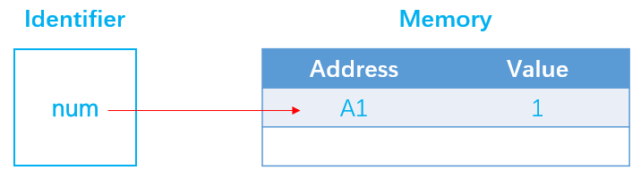
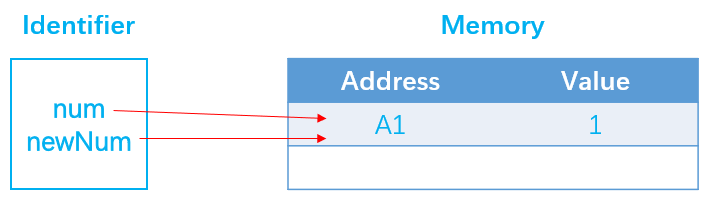
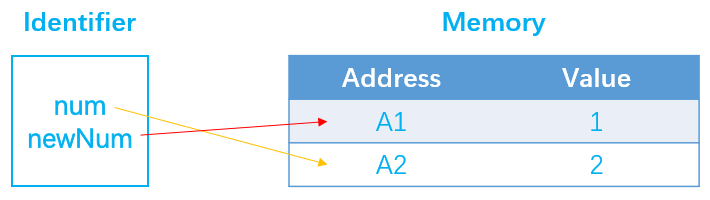
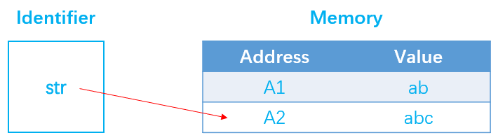
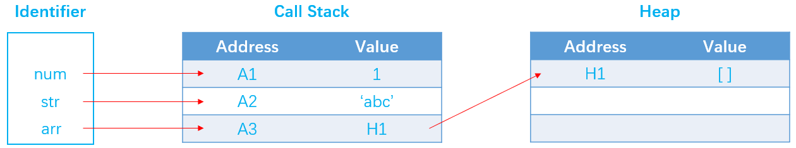
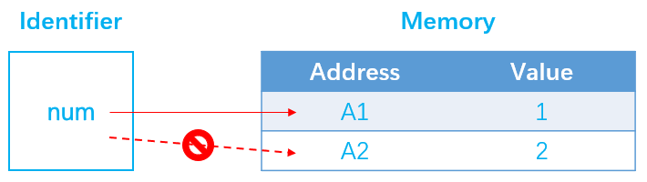
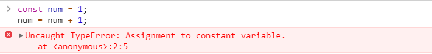
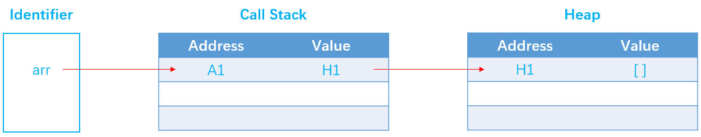
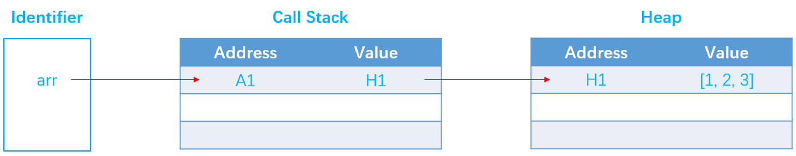

在我们的前端日常工作中，无时无刻不在进行着变量的声明和赋值，你是否也曾碰到过变量声明报错或变量被污染的问题，如果你跟笔者一样碰到过，那么我们应该暂时停下来好好思考问题发生的原因以及如何采取相应的补救措施。当然排查问题最好的方式就是深入其底层细节，了解在JavaScript中的内存分配方式。只有我们对底层细节有一定的了解之后，才能轻而易举地化解在写代码过程中遇到的各种问题。本文基于JavaScript的内存模型继续衍生出let和const的差异性对比，若文中有错误的地方，还请指出。
在讲解JavaScript中的内存模型之前，我们先从硬件层面来简单了解下内存是什么。
内存是计算机中重要的部件之一，它是外存与CPU进行沟通的桥梁。计算机中所有程序的运行都是在内存中进行的，因此内存的性能对计算机的影响非常大。内存(Memory)也被称为内存储器和主存储器，其作用是用于暂时存放CPU中的运算数据，以及与硬盘等外部存储器交换的数据。只要计算机在运行中，CPU就会把需要运算的数据调到内存中进行运算，当运算完成后CPU再将结果传送出来，内存的运行也决定了计算机的稳定运行。
内存条是计算机组成结构中的关键部分，其本身是一个非常精密的部件，内部包含了上亿个电子元器件，它们很小，达到了纳米级别。这些元器件，实际上也就是电路，电路的电压会发生变化，但只有两种可能，要么0V(低电平)，要么5V(高电平)，0V是断电，用0来表示，5V是通电，用1来表示，因此一个元器件包含了两个状态0和1，即表示一位(bit)。但是作为人类，我们并不擅长使用bit来思考和计算，因此我们会将它们划分成更大的组，例如8位表示1个byte(字节)，16位表示2个byte(字节)，32位表示4个byte(字节)。有很多东西都是存储在内存中的，比如我们的程序代码，程序中所声明的变量以及操作系统的代码等。
了解了内存的基本概念后，我们来简单聊聊内存的生命周期。JavaScript作为一门高级编程语言，不像其他语言(例如C语言)中需要开发人员手动地去管理内存，系统会自动为你分配内存。但是无论是哪种编程语言，内存的生命周期都主要分为三个阶段：
分配内存：由操作系统来分配内存，供程序使用。在JavaScript中，这一步由操作系统来自动分配，无需开发人员手动操作。使用内存：程序获得操作系统所分配的内存之后，在内存中发生读和写操作。释放内存：程序使用完内存之后，会将这部分内存释放出来供其他程序使用。在JavaScript中，这一步同样不需要开发人员手动操作，由操作系统自动释放。我们知道，在JavaScript中的数据类型分为基本数据类型和引用数据类型，其中基本数据类型包括String、Number、Boolean、Null、Undefined，ES6中新增的Symbol以及最新的BigInt，除了这些以外，其他的均为引用数据类型，例如Array、Date、Function、RegExp、Error，Object等。那么这两种数据类型的其中一个区别就是，基本数据类型的内存大小都是固定的，而引用数据类型的内存大小都是动态不固定的，可能会随时发生变化。因此在内存分配阶段这两种数据类型会有一定的差异。
编译器在编译代码时，对于基本数据类型，由于其空间大小固定，编译器在检查时会提前计算它们需要的内存大小，并插入与操作系统交互的代码，向操作系统申请存储变量所需的堆栈字节数，然后将申请到的内存分配给调用堆栈中的程序，称为静态内存分配。例如在调用函数时，函数中的变量所需的内存会被添加到现有的内存之上，当函数执行完毕后，这部分内存又会以后进先出(LIFO)的顺序被移除。但是对于引用数据类型，其空间大小是动态的，在编译阶段无法直接确定其需要多少内存，因此不能在堆栈上为其分配内存，相反，需要在运行时向操作系统申请适当的内存，并且这部分内存是在堆空间进行分配的，称为动态内存分配。静态内存分配和动态内存分配的区别如下表所示：
| 静态内存分配 | 动态内存分配 |
|---|---|
| 编译阶段可确定大小 | 编译阶段无法确定大小 |
| 在编译时执行 | 在运行时执行 |
| 分配给堆栈 | 分配给堆 |
| 顺序分配，后进先出(LIFO) | 无序分配 |
在我们的前端开发日常工作中，几乎每天都在做着变量的声明和赋值，这些变量最终都会被存放到内存中，所以我们还是有必要了解一下在JavaScript中的内存分配方式，这里使用基本数据类型和引用数据类型来分别讲述一下内存的分配过程，帮助我们理解JavaScript的底层细节。
首先我们从一个简单的基本数据类型的赋值开始，代码如下：
let num = 1;当JavaScript引擎在执行到这行代码时，会执行如下操作：
num创建一个唯一标识符(identifier)，该标识符用于与栈内存中的地址A1形成映射关系。A1。1存储到分配的地址。示例图如下：

通常我们说num变量的值等于1，但其实严格意义上来讲，num变量的值等于栈内存中存放对应值的内存地址(如图中的A1)。接下来我们创建一个新的变量newNum并将num赋值给它：
let newNum = num;经过以上赋值之后，通常说newNum的值为1，同样从严格意义上来讲的话是指newNum和num指向同一个内存地址A1，如下图所示：

如果接下来我们执行以下操作，看会发生什么：
num = num + 1;我们对num变量进行自增长，很显然num变量的值为2。由于newNum和num指向同一个内存地址A1，那么此时newNum的值是否也为2呢，在回答这个问题之前，我们先来看一下当前内存地址发生的变化：

在上图中我们可以发现，num变量的内存地址发生了改变，由原来的A1变为A2，这是因为在JS中的基本数据类型都是不可变的，一旦修改，只会为其分配新的内存地址并将修改后的新值存入到新的地址中，因此回答上面的那个问题，newNum的值保持不变，依旧为1，因为它的内存地址没有发生改变。再看如下示例：
let str = 'ab';
str = str + 'c';因为字符串也是属于基本数据类型，基本数据类型都是不可变的，所以即使上述代码中只是简单的将c拼接到了原来的字符串ab后面，但是依旧会为其分配新的内存地址，变量str最终会指向这个新的内存地址，如下图所示：

了解了基本数据类型的内存分配方式之后，接下来我们来了解下引用数据类型的内存分配方式。同样我们从一个简单的引用数据类型的赋值开始：
let arr = [];当JavaScript引擎在执行到这行代码时，会执行如下操作：
arr创建一个唯一标识符(identifier)，该标识符用于与栈内存中的地址A3形成映射关系。A3。H1。空数组[]。示例图如下：

在JavaScript引擎(例如Chrome和Node的V8引擎)中主要是由两个部件组成，一个叫内存堆(Memory Heap)，一个叫调用堆栈(Call Stack)。其中调用堆栈除了函数调用之外，主要用于存放基本数据类型的值，而引用数据类型的值一般都存放在内存堆中，堆中存放的数据都是无序的并且可以动态地增长，所以非常适合用于存储数组和对象。
let和const的差异性对比在了解完以上两种数据类型的内存分配方式后，我们这里对let和const的使用方式进行一下对比，通常来说，我们建议在写代码的过程中能使用const的地方尽量减少使用let，这样可以在某种程度上避免变量被无端修改而引发的一系列问题。如下代码：
let num = 1;
num = num + 1;
let arr = [];
arr.push(1);
arr.push(2);
arr.push(3);在上述代码中，变量num因为使用let的方式声明，所以允许其被修改，因为基本类型的值是不可变的，所以会为num变量分配新的内存地址。对于arr变量，这里同样使用let方式进行声明，表示允许其修改，但是对于push操作其实并没有修改arr变量的内存地址，只是将新的值推入了堆内存的数组中，所以此处建议修改为使用const进行声明。
笔者的观点是：将修改理解为修改内存地址，若允许修改内存地址，则使用
let进行声明，否则使用const进行声明。
如下示例：
const num = 1;
num = num + 1;由在上一小节中了解到的基本数据类型的内存分配方式，我们知道为变量num在栈内存中分配了一个地址来保存对应的值。
但是这里我们是使用const的方式来进行声明的，当我们重新为变量num进行赋值时，JS尝试为其分配新的内存地址，那么这里也就是抛出错误的地方，因为我们明确不允许对其进行修改。

因此在控制台中我们会看到对应的报错信息。

再看如下示例：
const arr = [];对于引用数据类型，我们知道会在栈内存上为其分配内存地址，存储的是堆中的内存地址的值。

我们做如下操作：
arr.push(1);
arr.push(2);
arr.push(3);
执行push操作实际上是将新值推入堆中的数组，内存地址并没有发生改变。这也就是为什么虽然使用const声明变量，但是依旧没有报错的原因。但是如果我们使用如下方式：
arr = 1;
arr = undefined;
arr = null;
arr = [];
arr = {};这些方式都会修改原数组的内存地址，const声明是不允许修改内存地址的，所以很明显会抛出错误。因此这里也是建议默认情况下使用const声明变量，除非需要修改内存地址，const声明的变量必须在声明时进行初始化，也方便了其他前端人员能一眼看出哪些变量是不可变的。
在本篇中主要总结了一下JavaScript中的内存模型，并针对基本数据类型和引用数据类型分别讲述了其在JavaScript中的内存分配方式，然后对let和const这两种在代码中的变量声明方式进行对比以了解其中的差异性，下篇基于内存模型继续讲解JavaScript引擎中的垃圾回收机制以及在写代码过程中的几种有效避免内存泄漏的方式，和大家一起了解JavaScript的底层细节。
若觉得笔者的文章对你有帮助的话，不妨关注下笔者的公众号，每周都会原创和整理一些前端技术干货，关注公众号后可以邀你入群，我们一起交流前端，相互学习，共同进步。
文章已同步更新至Github博客，若觉文章尚可，欢迎前往star！
你的一个点赞，值得让我付出更多的努力！
逆境中成长，只有不断地学习，才能成为更好的自己，与君共勉！